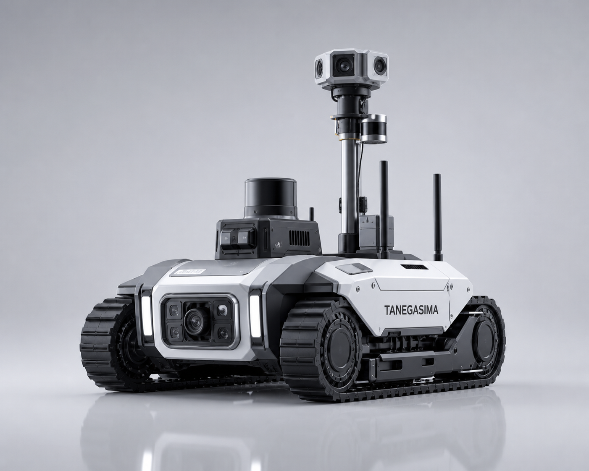
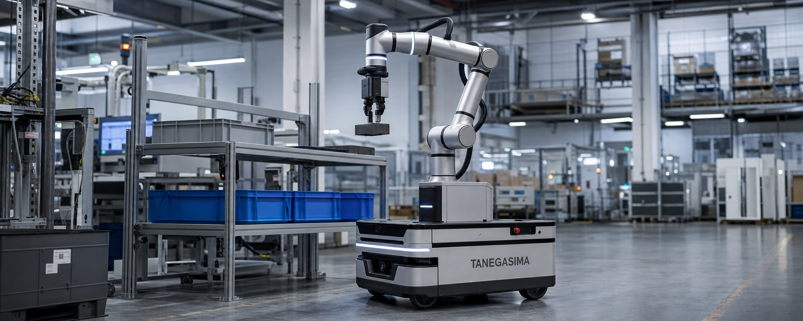

トンネル、地下設備、災害現場、狭所点検向けの低重心履帯ロボット。段差・瓦礫・滑りやすい床面に強く、危険区域の初動確認や遠隔点検に適した形態です。

狭所や危険空間への先行投入を想定した大まかな仕様イメージです。通信中継、ガス検知、追加照明、マニピュレータ先端など、任務に応じた装備拡張を前提としています。
段差、砂塵、瓦礫、傾斜などへの踏破性を重視した履帯機構。
低いクリアランスや狭い通路へ進入しやすい安定構造。
一次調査や遠隔状況把握に必要なセンサーパッケージを想定。
危険区域では遠隔操縦、平常時は定期巡回へ切替しやすい構成。
人が入る前に視覚・熱・環境データを取得し、判断時間を短縮。
地下通路、ユーティリティコリドー、災害現場のような環境に適応。
照明、ガス検知、追加マストなど目的別の構成変更がしやすい設計。

TRACKED RESPONSE X は、地下トンネルや設備コリドー、事故後の初動確認など、人がすぐに立ち入れない環境での情報収集に向いています。まずロボットを入れて、見える化してから判断する運用が可能です。
進入条件、通信制約、点検対象、必要センサーを整理。
操縦UI、映像フィード、警報連携、通信リピータ構成を検討。
定期点検、事故初動、セキュリティ巡回などの運用フローへ接続。